Mô hình: Logistic Regression
Tham số: {'C': 0.001}
Độ chính xác test (%): 100.0
Số thành phần PCA: 68
Ngưỡng người lạ: 0.86
Cách chọn ngưỡng: Cân bằng FAR/FRR
Ảnh lạ dùng chọn ngưỡng: 150
Ảnh lạ kiểm tra bị nhận nhầm: 2/14
Ảnh quen kiểm tra nhận đúng sau ngưỡng: 50/60
FAR / FRR trên ảnh dùng chọn ngưỡng (%): 11.3 / 11.9
Người được điểm danh (trong lớp): Bui_Anh_Tuan, Bui_Trung_Hieu, Hoang_Le_Hai, Hoang_Tuan_Hung, Le_Thanh_Cao, Ly_The_Anh, Mai_Manh_Hung, Nguyen_Hoang_Anh, Nguyen_Trong_Thuy, Nguyen_Trung_Dung, Nguyen_Van_Lam, Tong_Van_Dung, Vu_Duy_Anh, Vu_Van_Dai, Vu_Viet_Bao
| mo_hinh | tham_so | cv_% | test_% | precision | recall | f1 | ms_moi_anh |
|---|---|---|---|---|---|---|---|
| Logistic Regression | {'C': 0.001} | 100.0 | 100.0 | 1.0 | 1.0 | 1.0 | 0.643 |
1_anh_mau.png
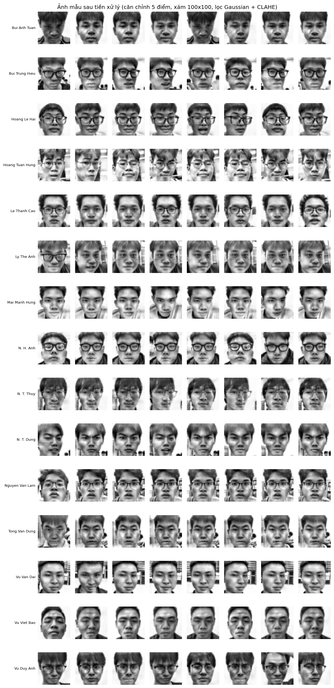
1_can_bang_sang.png
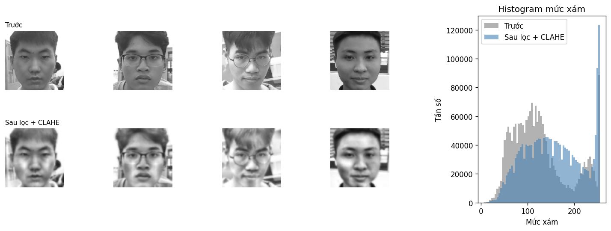
1_so_anh_moi_nguoi.png
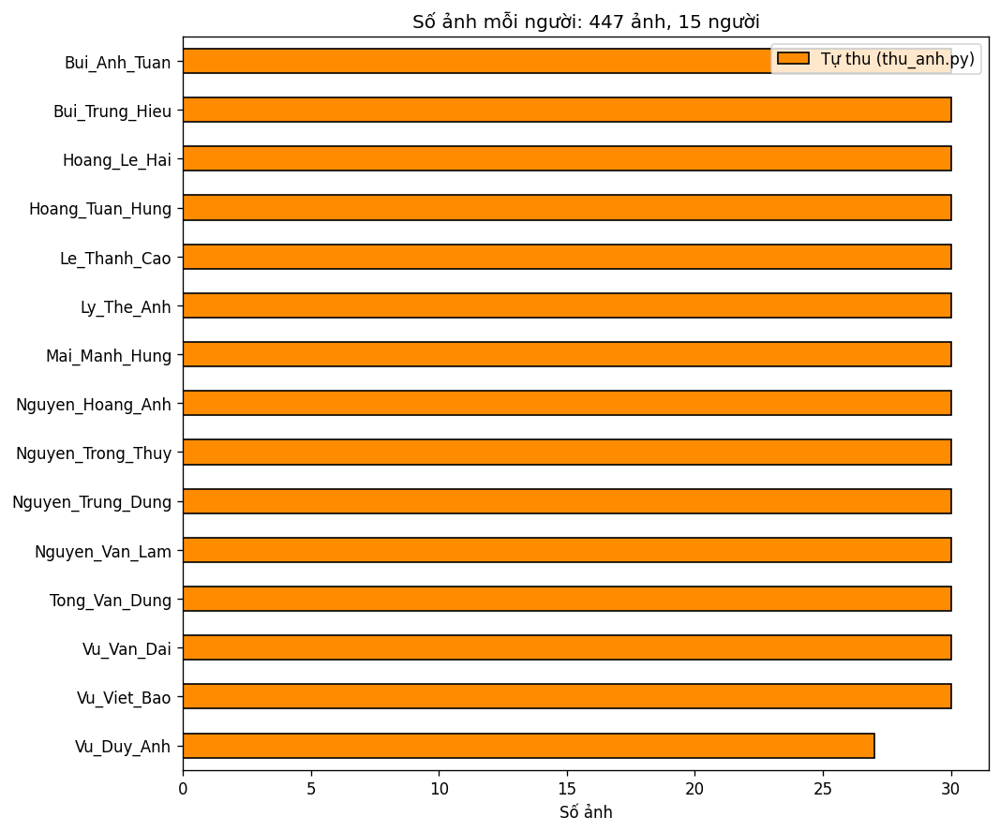
2_chia_train_test.png
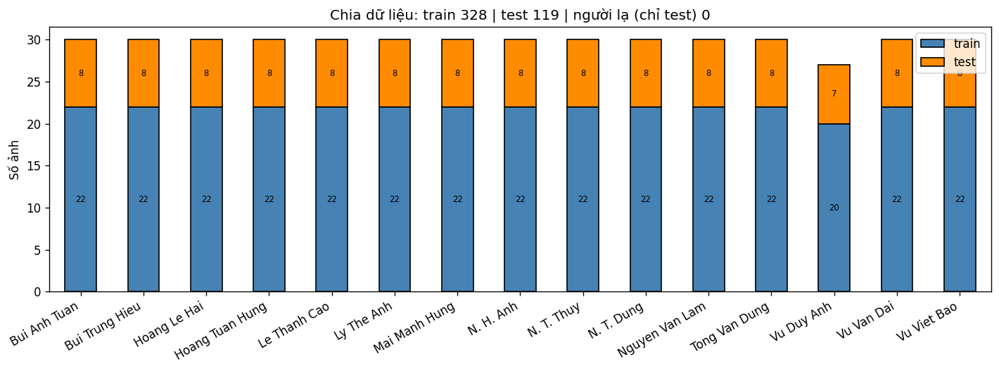
3_eigenfaces.png
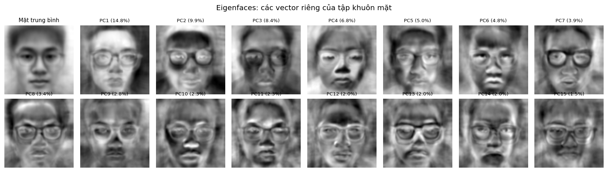
3_khoi_phuc_pca.png
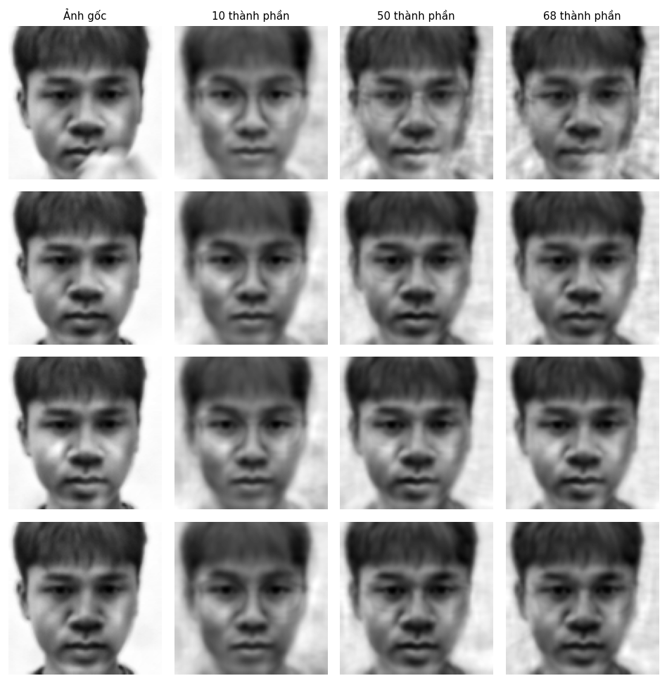
3_pca_phuong_sai.png
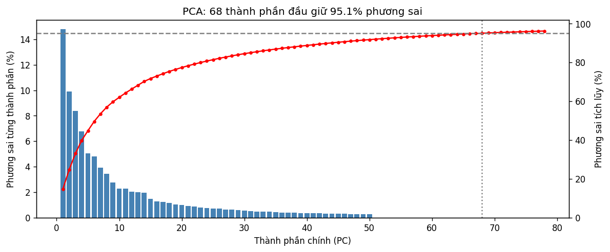
3_truoc_sau_pca.png
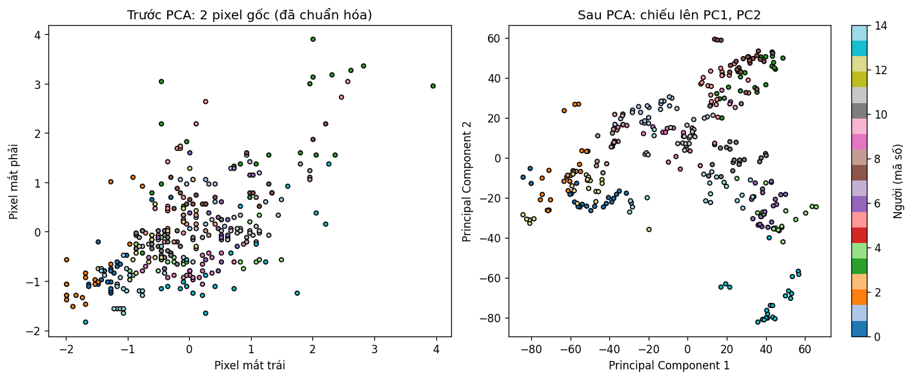
4_du_doan_tap_test.png
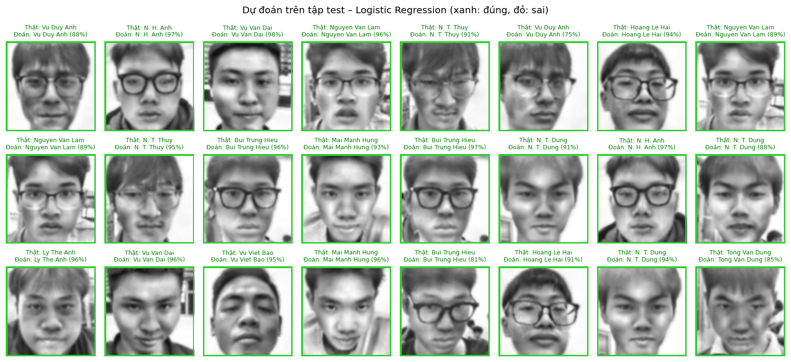
4_xac_suat_du_doan.png
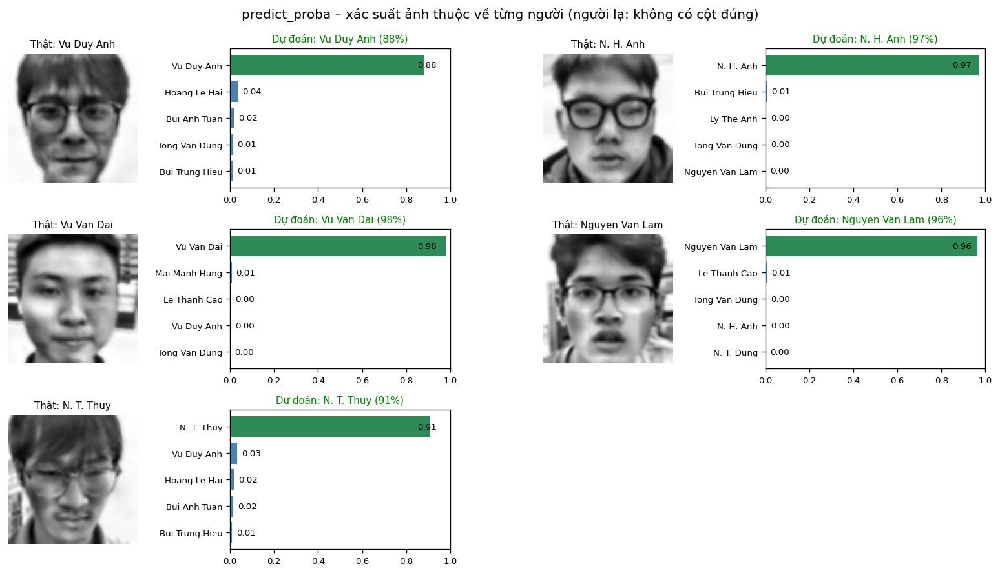
5_danh_gia_logistic.png
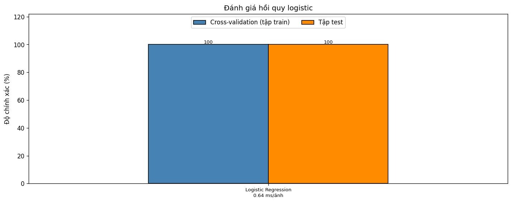
5_ma_tran_nham_lan_tot_nhat.png
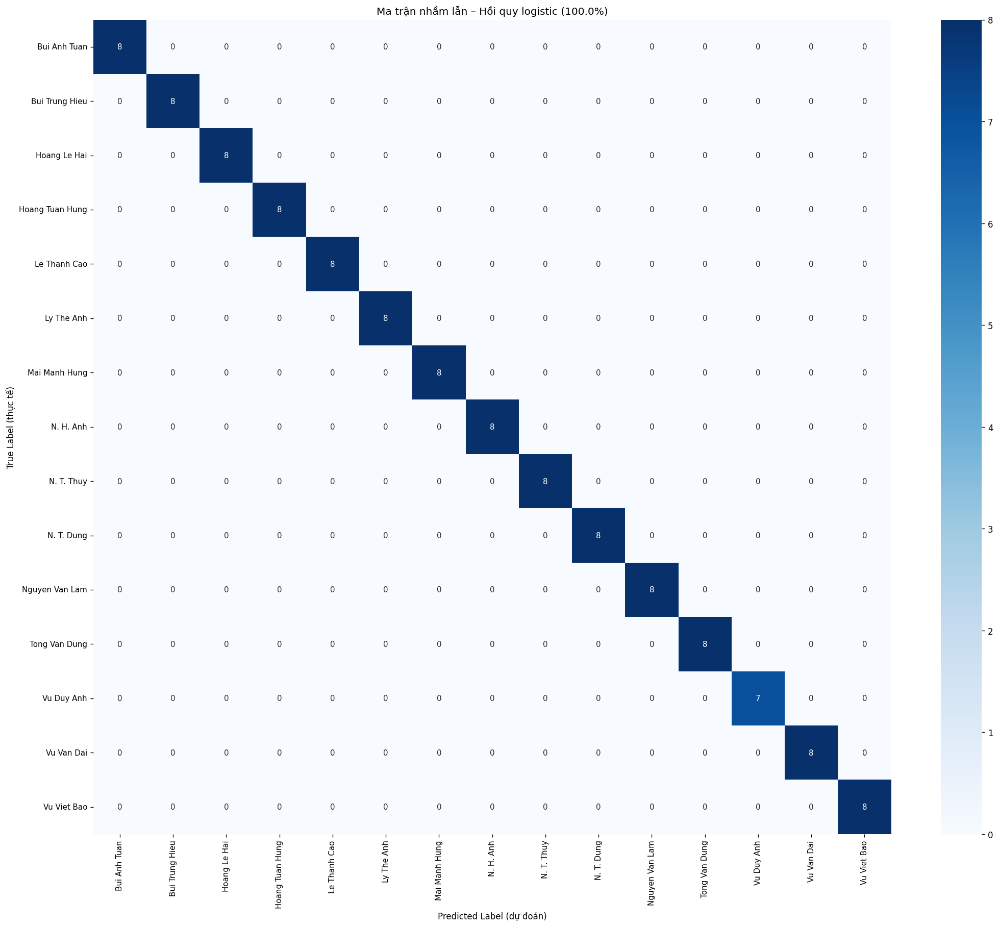
5_nguoi_la.png
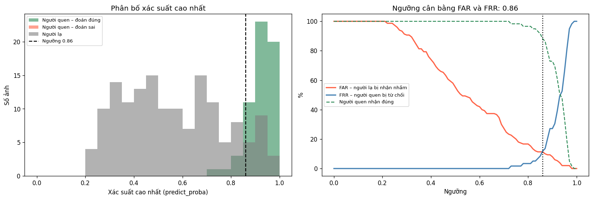
5_nguoi_la_anh.png
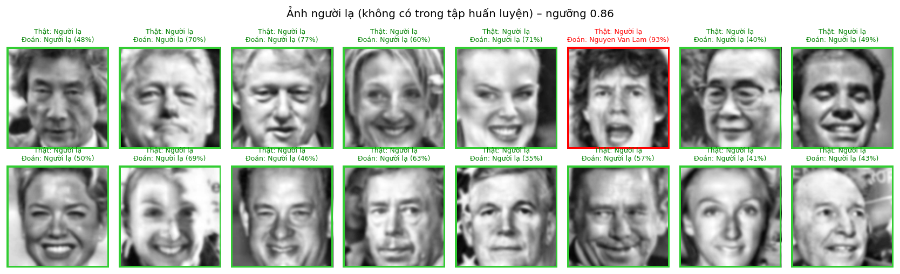
5_roc_tot_nhat.png
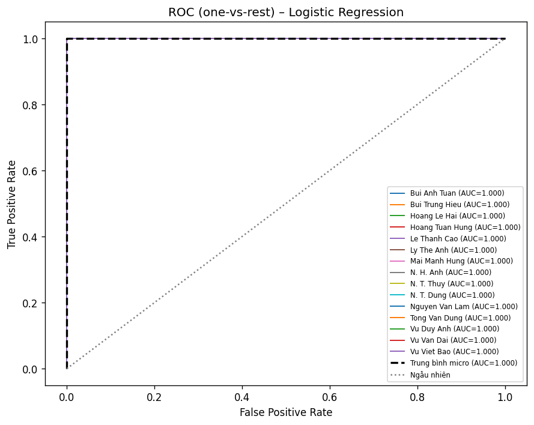
5_theo_nguon_anh.png
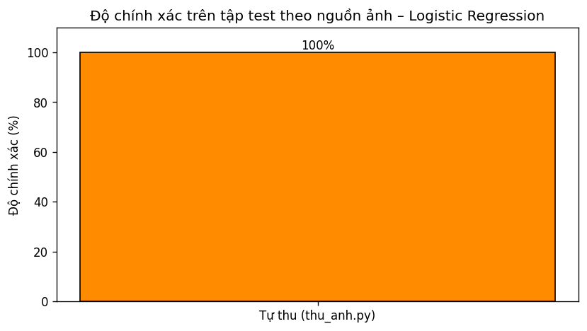
5_theo_tu_the.png
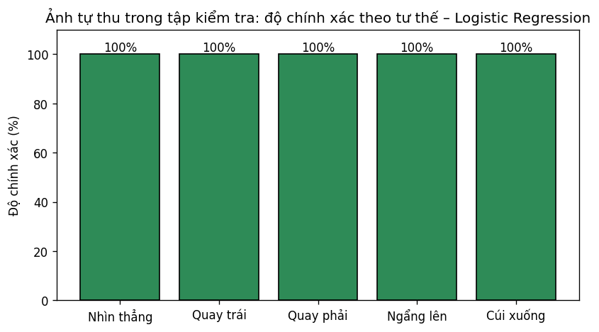